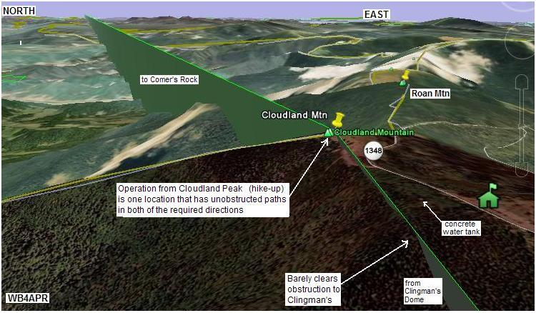

2014 SUCCESS! K4KWL, Dave Simmons again lead the effort this year and was operational by about 1044. Packets from his station were logged at the home QTH of AL0I.
2013 Planning: Dave Simmons, K4KWL is leading the effort this year. See the summary spread sheet.
2012 Planning: Eric KZ5ED and Steve KI4ZUI operated the site in 2012 on 21 July!
2011 SUCCESS: Eric, KZ5ED, Steve, KI4ZUI, Glenn N4AZR and Todd AL0I again manned Roan mountain this year, their third year for most of them. Bob KC4TVO couldn't make it this year. They were 100% succcessful with both voice and data. See their Roan 2011 report.
2010 SUCCESS ! Eric, KZ5ED and Steve, KI4ZUI returned from 2009 and were joined by Todd Morgan AL0I. Even though the mountain top park was closed, they established comms southward with Clingmans and Springer Mountain from the side of the road shown below. But again, Comer's to the north was unmanned again. See 2010 report. Back in 2009, Bob Rodgers, KC4TVO reported on the success at Roan Mountain. See 2009 report. In addition, AL0I in Boon NC copied the following 2009 Message file and 2009 packet log.
See the Golden Packet plan. . This is one of the 15 hill-top sites from Georgia to Maine we man the 3rd Sunday in July for 4 hours anually to attempt to relay a text message using hand-held radios the 2000 mile length of the Appalachain trail. This is to be a no impact Leave-No-Trace type of event of a few individuals at each site. . Other hikers equipped with APRS ham radios are welcome to participate during the free hour after 3 PM..
Roan Mountain has a paid-parking visitors area with restrooms and a small ranger building to collect the fee. Located at the previous site of the original Cloudland Motel, it is a well visited public site and will provide plenty of elevation for Amateur Radio during this event. However, it is a tree covered dome, and views of the horizon are hard to find. Any site will require a mast and will have to take into consideration local blockages.
ALTITUDE: . . . . . . . . . . . 6285 feet at the parking lot
POSITION:. . . . . . . . . . . . 36-06.31N / 082-07.85W on top of Cloudland.
. . . . . . . . . . . . . . . . . . . . . . . . . . (was 36-06.26N / 82-07.96W in parking lot)
LINK NORTHEAST: . . . Comers Rock Easy drive-up site
RF details
by John, KX4O
LINK SOUTHWEST: . . . Clingman's Dome Easy Drive-up.
RF details
by John, KX4O
VOICE REPEATER:. . . .145.19 (no tone), Mt Mitchell at 6500'
ECHOLINK NODE: . . . TBD
INTERFERRENCE: . . . None. No known emitters at this site. No cell phone coverage either!
TEAM LEADS: . . . . . . . . Eric Davenport KZ5ED [ * certin . com] (2010/2009)
. . . . . . . . . . . . . . . . . . . . . . Steve Williams KI4ZUI [xantherx * verizon . net] (2010/2009)
. . . . . . . . . . . . . . . . . . . . . . Glenn N4AZR is interested in 2010 but can't make it...
. . . . . . . . . . . . . . . . . . . . . . Bob Rogers KC4TVO [ * oakcreekcorp dot com) (Mayland ARC & Mitchel Co. ARES (2009)
. . . . . . . . . . . . . . . . . . . . . . Lee Price [kd4gcf*yahoo dot com] (lives close) (2009)
. . . . . . . . . . . . . . . . . . . . . . Robert West AA4ZT maybe? [west_robert_l*yahoo dot com] (2009)

COMMENTS: .
Bob Rogers, KC4TVO Reported: In 2009, that permission has been granted to operate from the park and that they will use a 30 foot mast in a good location.
John Huggins, KX4O's link analysis shows that Roan will need a good station for both of its links. The hard part is finding a location on the mountain top that can see unobstructed views in our two very precise directions. Plus having to use a small mast to get above the trees. There are three possibilities outlined below.
CONCRETE TANK-TOP: This location shown above was found by WB4APR during a site visit in early July and has numerous advantages. It is 320 feet from the parking lot, it has the highest ground elevation, it has clear views in our desired link directions, it has an existing trail to it and it is a great 20'x20' flat working area that is about 6 feet above even ground level and that reduces the mast requirement to less than say 20 feet to clear the trees. Also, it is out-of-sight which is now a requirement since permission to operate at Roan has become problematic due to bureaucratic red-tape. See photos: Tank height, Tank view south, and Tank view north. And finally, here is another more recent view of the tank from Google.
CLOUDLAND PEAK: Google Earth shows the peak of the old Cloudland Mountain (see view) to have about the same elevation as the southern parking lot. But a site visit reveals that the exact NE link to Comer's Rock is blocked by the Cloudland peak from the parking lot. But portable operation from the Cloudland peak does have clear horizon views in both required directions but the horizon is blocked by trees towards Clingman's. See view . The peak here is also about 320 feet from the parking lot. The problem is, it is high visibility and will be easily visible to park personnel.
SOUTHERN PARKING LOT: Lee Price reports that the parking lot south of the Cloudland parking lot is higher at the north end near the rest rooms (see view) , but according to Google Earth, that location is precisely blocked in the direction of Comer's Rock by the peak of Cloudland Mountain. From this parking lot location, however, the 320 foot walk to the NW into an open trail in the woods reveals the ideal water tank location noted above.
William McKeehan, KI4HDU (http://mckeehan.homeip.net) reports: . we ... began talking about this on the net tonight. I suspect that we will be able to find some folks to cover the Clingmans, Roan or Sand Mountains. Once we have some specific volunteers named, I'll e-mail you to let you know for sure of there participation.
Bob Rogers reported: We will make a trip and make repeater tests probably
sometime in the last week of April or so. From Roan, we should be able to just
listen to the Sand Mountain voice repeater on 146.775 (input on 144.67 Tone 103)
and test the packet digipeater that is supposed to be there KW4FM. Maybe we
can do a mobile to mobile test with someone on Clingman's.
Update: We have abandoned Sand Mountain in favor of Comer's Rock.
Lee reports: There appears to be a road from Carvers Gap at US 19E up to within 0.5 miles of the top of Roan Mountain. I currently do not know about access on that road these days. Most likely it is open in the summer. The hike from Carvers Gap to the top of Roan is about 2 miles. But as this view clearly shows, there is not only driver access to the area, but parking lots and plenty of views. Apparently this is Cloudland Mountain which is only a fraction of a mile from Roan Mountain and nearly as high.

The above view shows the RF path from Clingman's dome in the Great Smokies National Park to Roan Mountain. THe RF plots by KX4O show pretty good RF links.

DETAIL LINK ANALYSIS BY KX4O: Be sure to follow the two RF links at the
top of this page to see the excellent and very detailed RF link analysis
performed for every link in this project by KX4O John Huggins.
Each RF link shows the terrain map
elevations, the AT trail in yellow, the RF path loss itself
including fresnel zones and finally a
statistical plot of the probabilities of link availability. We will very
much be looking at the results of this project compared to the pre-event
analysis and predictions. All of KX4O's links are shown on his
AT Links Page.
This last image shows the path to the Comers Rock and Sand mountain areas:

The image above is a plot of APRS mobile coverage on I-81 using 144.39 existing APRS system. In purple you can see the path we hope to use for the AT special event.
Bob, WB4APR
See my other GENERAL page on APRS applications and Ideas on the AT
Return to the APRS HOMEPAGE or SiteMap.
{kind=link}
{kind=link}
{kind=link}
{kind=link}
{kind=link}
{kind=link}